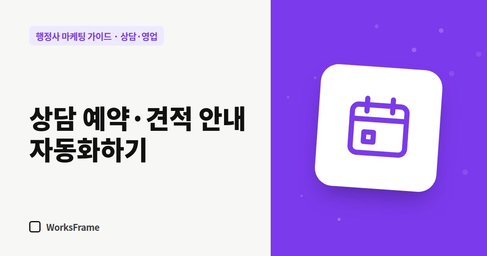

상담·영업
상담 예약·견적 안내, 손 덜 가게 만드는 법
한 줄 답
예약은 링크 하나로, 준비서류 안내와 견적은 양식으로, 문의 폼엔 자동 답장을 걸어 두세요. 같은 연락을 반복하는 일이 크게 줄어듭니다.

상담 날짜를 잡느라 문자를 다섯 번 주고받고, 같은 서류 목록을 매번 새로 쓰고 있다면 자동화할 차례입니다. 복잡한 시스템이 아니라 양식 몇 개면 충분합니다.
1. 예약은 링크 하나로
- 예약 도구(네이버 예약, 캘린더 예약 링크 등)에 상담 가능한 시간만 열어 두기
- 홈페이지·카톡 채널·자동 문자에 같은 링크
- 예약 폼 질문은 3개만: 업무 종류, 기한 여부, 연락 방법
2. 업무별 ‘준비서류 안내’ 양식
주력 업무마다 서류 체크리스트를 미리 만들어 두세요. 문의가 오면 복사해서 보내기만 하면 됩니다. 홈페이지 업무 안내 페이지 주소를 함께 보내면 더 좋습니다.
3. 견적 양식
| 항목 | 내용 |
|---|---|
| 업무명 | |
| 포함되는 일 | 서류 검토, 작성, 제출 대행, 보완 대응 등 |
| 수임료 | 부가세 포함 여부 |
| 별도 비용 | 인지대·수수료·번역·공증 등 |
| 예상 기간 | 범위와 변수 |
| 진행 조건 | 계약금, 중단 시 정산 |
같은 양식으로 보내면 고객이 비교하기 쉽고, 나중에 분쟁도 줄어듭니다.
4. 문의 폼 → 알림 → 자동 답장
- 폼이 접수되면 휴대폰 알림
- 고객에게 “접수했습니다. ○시간 안에 연락드립니다” 자동 답장
- 답장에 준비서류 안내 페이지 링크
5. 진행 상황 알림
진행 중인 고객은 “지금 어떻게 되고 있나요?”를 자주 묻습니다. 단계가 바뀔 때마다 한 줄씩 먼저 알려 주면 문의 전화가 줄어듭니다.
- 서류 접수 완료 → 제출 완료 → 보완 요청(있다면) → 결과
자주 묻는 질문
자동화하면 고객이 차갑게 느끼지 않을까요?
자동화는 반복되는 안내에만 쓰고, 판단과 설명은 직접 하세요. 빠른 답장은 오히려 신뢰를 줍니다.
도구 비용이 부담되는데요.
처음에는 문서 양식과 캘린더만으로도 충분합니다. 문의가 늘어난 뒤에 도구를 늘리세요.